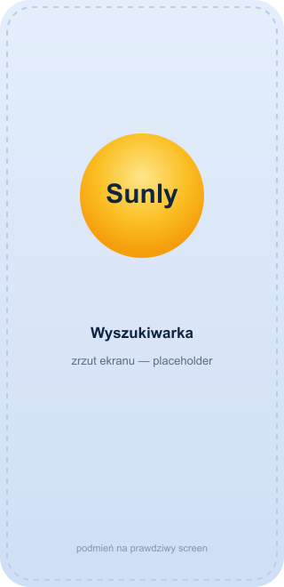
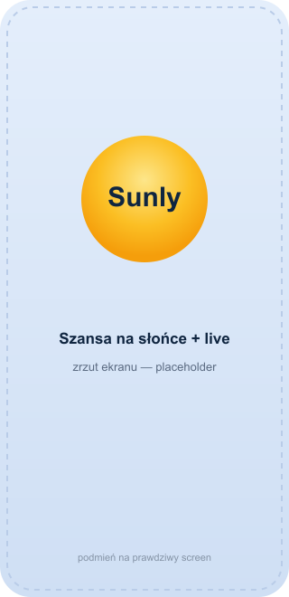
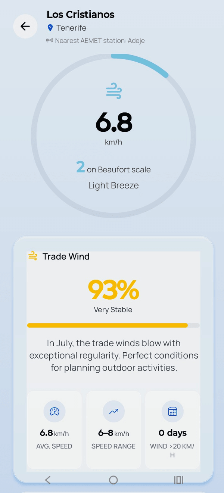
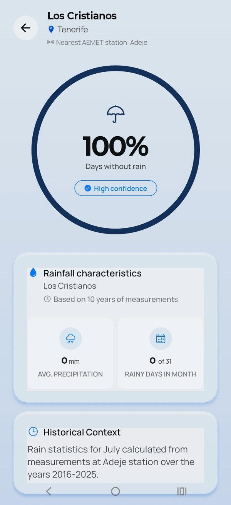

Search a place, pick a month, and Sunly shows the statistical chance of sun based on 10 years of official AEMET data.


or your location
10 years of data, not a forecast
plus temperature, wind, rain
All data comes from the nearest AEMET station — its name is shown in the app.


247 searchable places across the Canaries, the Balearics and the Spanish south-east coast.
Every number in Sunly comes from AEMET, Spain's national meteorological agency. We count sunny days, rainy days and windy days.
Free on Android. No ads, no accounts, no tracking.
Data: AEMET, 2016–2025. Sunly is not affiliated with or endorsed by AEMET.Run a hotel, apartments or a travel agency? Embed the Sunly sun-chance widget on your site — the same 10 years of AEMET data.